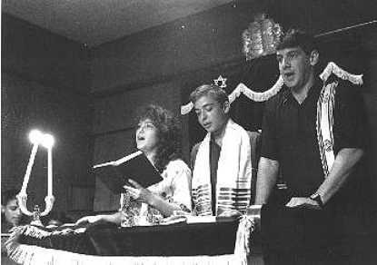
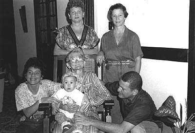
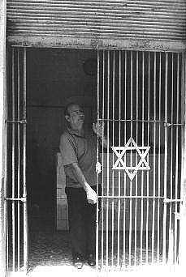
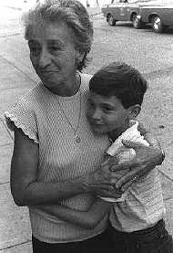
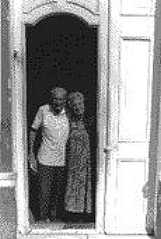
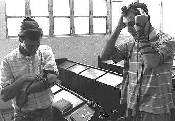
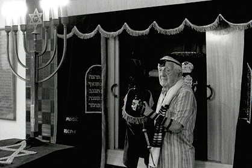

PHOTOS BY PAUL MARGOLIS

The rebirth of Judaism in Cuba is symbolized by this photo
of three young people conducting services at the Patronato Synagogue
in Havana. A more telling comment is that the two young men
are now in Israel, and the young woman is in Chile.

Four generations of the Botton-Behar family, descendants
of Turkish-Sephardi Jews, in Santiago de Cuba.

Abraham Berezniak's (may
he rest in peace) kosher butcher shop, Old Havana.
Jews who keep kosher are given 3/4 of a pound of meat every
two weeks.

Grandmother and grandson in Cienfuegos, a port city 150 miles
from Havana with a 20-person Jewish community.

Manual and Genova Feldhandler, Cienfuegos. Feldhandler came
from Poland to Cuba as a young boy in the 1920s. He stayed,
married and raised a family, and is now retired.

Young men putting on tefillin in Orthodox Temple Adath
Israel in Old Havana.

Elazar Bennado, of blessed memory, removes the Torah from
the Ark at Temple Adath Israel.
Guantanamo and other photos
|